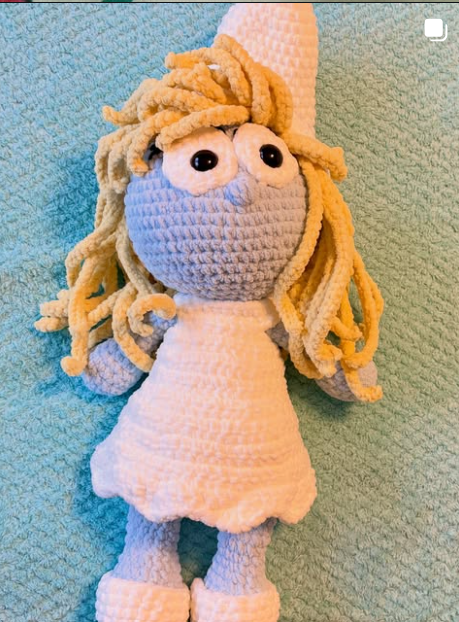

🧶 Welcome to My Crochet Corner 🧶

Hello! One of my favourite hobbies is crochet, followed closely by finding bargains on wool! I enjoy creating handmade items such as plushies, accessories, and gifts for family and friends.
🧶 Why I Love Crochet
Crochet allows me to be creative while also helping me relax. I love choosing different colours, learning new stitches, and seeing a project come together from a simple ball of yarn.
📜 The History of Crochet
Crochet is a textile craft that uses a single hooked needle to create fabric from loops of yarn. Its origins are debated, but modern crochet is believed to have developed in Europe during the early 19th century. The craft became especially popular during the Victorian era, when intricate lace patterns were used for clothing and home decoration. Over time, crochet evolved from a practical skill into a creative hobby enjoyed worldwide. Today, crocheters create everything from blankets and garments to amigurumi toys and works of art, combining traditional techniques with modern designs and materials.
💙 Favourite Project

Smurfette
I worked with a French-Canadian pattern designer to test her design, identify any issues and to make sure nothing was lost in translation (French to English).